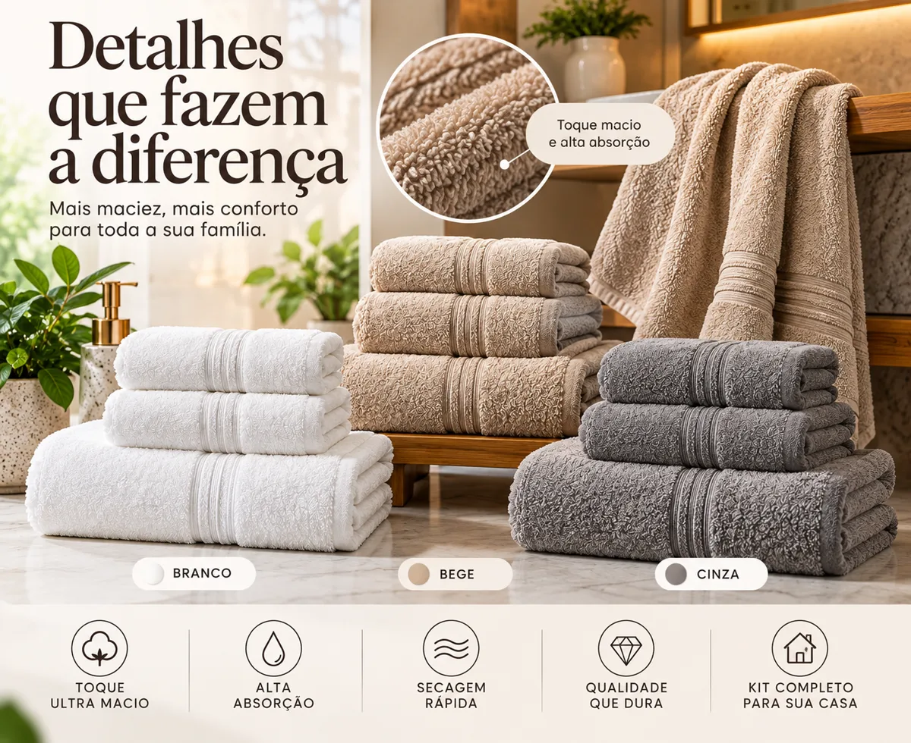
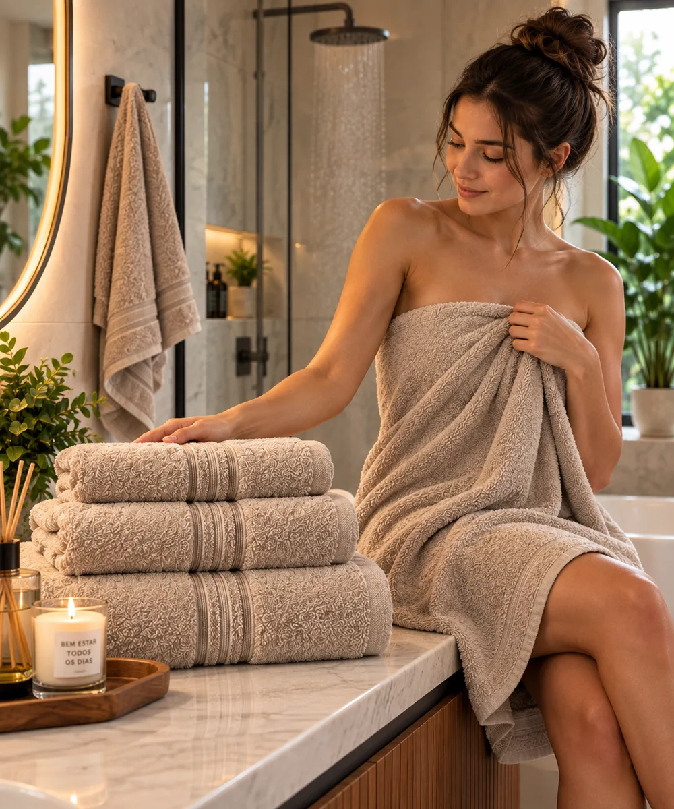
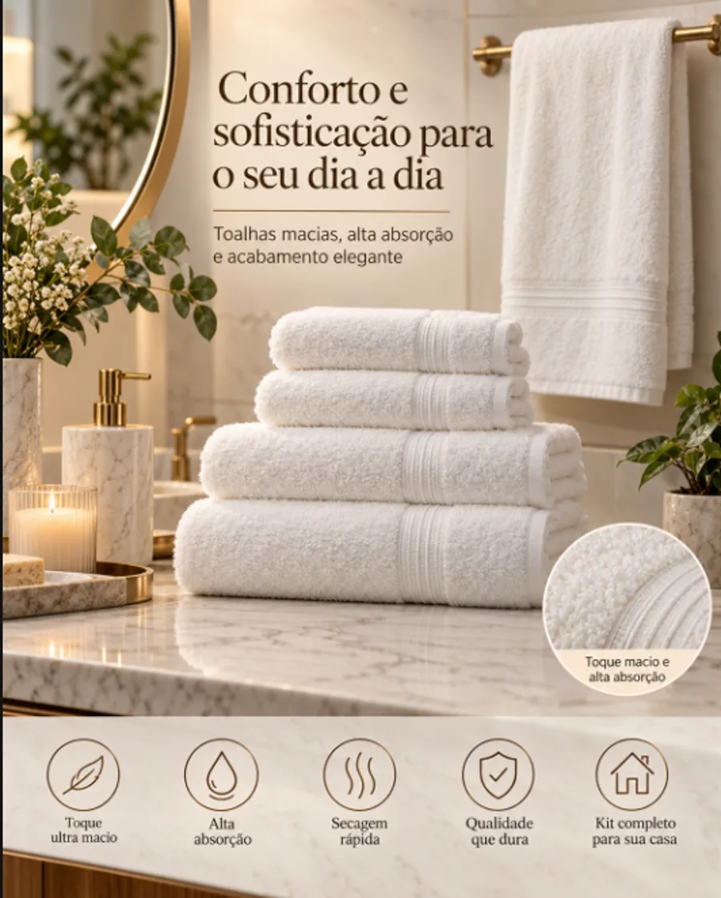

Enxoval & Banho
Jogo de toalhas em algodão egípcio chama atenção de quem busca mais conforto no banho
Kit com 5 peças combina toque macio, alta absorção e acabamento sofisticado para renovar o enxoval.

Renovar as toalhas de casa é uma das formas mais simples de melhorar o conforto do dia a dia. Depois do banho, a sensação de se enxugar com um tecido mais macio e encorpado já faz diferença — mas nem todas as toalhas oferecem esse resultado. Com o tempo, peças mais simples tendem a perder maciez e a reter menos água, o que torna o momento menos agradável.
É nesse ponto que entram os tecidos feitos com fibras de maior qualidade. O Jogo de Toalhas 100% Algodão Egípcio foi desenvolvido justamente para quem busca uma experiência de banho mais confortável, com peças mais macias, absorventes e de acabamento mais cuidadoso.
Por que o algodão egípcio chama atenção
O algodão egípcio é conhecido por suas fibras longas e finas, características que diferenciam o tecido logo ao toque. Fibras mais longas permitem uma fiação mais uniforme, o que resulta em um tecido com menos pontas soltas e uma sensação mais macia sobre a pele.
Além do conforto ao toque, esse tipo de fibra também contribui para a resistência do tecido, ajudando as toalhas a manterem a aparência e a maciez por mais tempo de uso.

Toque macio e alta absorção
Cada peça do kit é produzida com fio penteado e gramatura aproximada de 550 g/m² — um indicador do volume e da densidade do tecido. Quanto maior a gramatura, maior tende a ser a sensação de conforto e a capacidade de absorção no uso cotidiano.
Na prática, isso significa toalhas mais encorpadas, com toque macio desde o primeiro uso e bom desempenho para secar com poucos movimentos.
100% Algodão
Egípcio
Fio
Penteado
Alta
Absorção
≈ 550 g/m²
Kit completo para o dia a dia
O jogo foi pensado para atender às necessidades básicas do banheiro em um único conjunto, combinando peças de diferentes tamanhos para cada momento da rotina.
Toalhas de
Banho
Toalhas de
Rosto
Toalha de
Piso

Um jeito simples de renovar o banheiro
Trocar as toalhas é uma das mudanças mais simples para dar uma nova cara ao banheiro sem grandes reformas. Por serem peças de uso diário, elas têm impacto direto tanto no conforto quanto na aparência do ambiente.
As peças combinam entre si e acompanham diferentes estilos de decoração, do mais clássico ao mais contemporâneo. Entre as opções de cor disponíveis, os tons branco, bege e cinza se destacam por se adaptarem bem a diferentes paletas de banheiro.
Medidas de cada peça
Toalha de Banho
77 cm × 1,40 m
Toalha de Rosto
48 cm × 90 cm
Toalha de Piso
48 cm × 85 cm